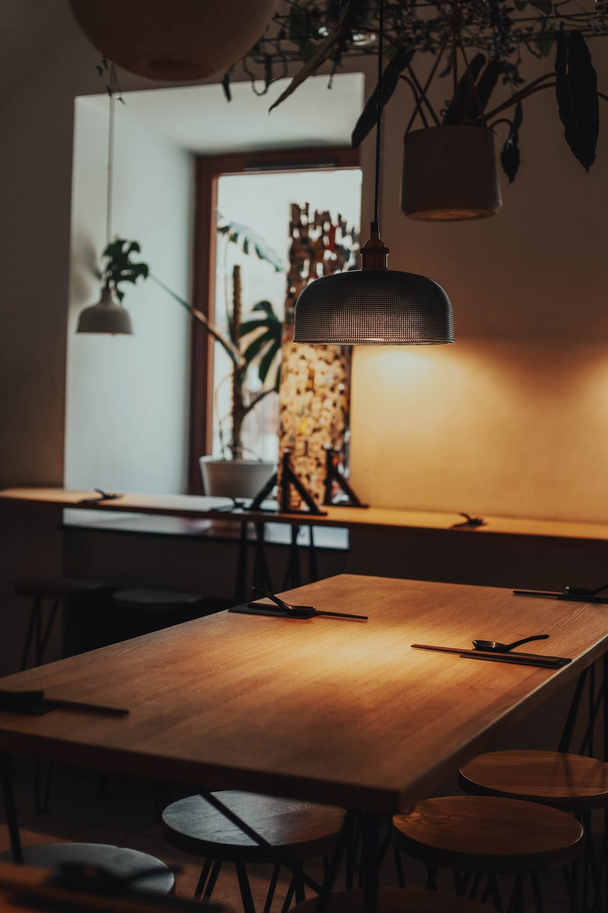

Nasz pierwszy dom — w samym sercu Krakowa, przy klimatycznej ulicy Węgłowej. To tu zaczęła się historia Akita Ramen: autentyczne japońskie smaki, długo gotowane buliony i ciepła, rodzinna atmosfera.
Nasze buliony gotowane są godzinami z najlepszych składników, a każda miska to małe dzieło sztuki. IN RAMEN WE TRUST.
Mamy kilka programów dla naszej ramenowej rodziny — łapcie Hot Ramen Deals!
Przychodzisz z psem? −10% na zamówienie. Hau miau! 🐾
Przyjeżdżasz na rowerze? −10% na zamówienie.
Z innego miasta (min. 50 km)? −10% za okazaniem dokumentu.
W dni powszednie każdy ramen −4 zł.
Zbierz 6 pieczątek = darmowy ramen. Karta papierowa lub w apce Embargo.
Działamy bez rezerwacji — wpadajcie, znajdziemy Wam miejsce.
Przychodźcie z czworonożnymi przyjaciółmi.
Menu dla dzieci (mięsne i wege), krzesełka, podkładki i miseczki dla maluchów.
U nas zawsze przyjemnie, niezależnie od pogody.
Wielorazowe — jednorazowe lub sztućce na życzenie. Chętnie nauczymy!
Gorąca herbata, parasolki i ogrzewacze dla czekających gości.
Jedzenie powinno zaspokajać głód — nie próżność, sprawiać przyjemność — nie trudność, być doznaniem kulinarnym — nie intelektualnym i dawać okazje do dzielenia się radością posiłku z bliskimi. Niekoniecznie na Facebooku…
Kuchnię zamykamy 30 minut przed zamknięciem lokalu.